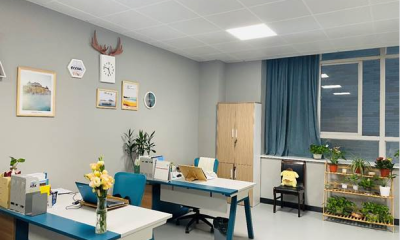

党员活动
党员阅读
工会快讯
教育发展基金会
督学

责任督学来校开展五月专项督导
为全面落实5月份责任督学挂牌督导工作，5月11日一早，责任督学张明校长来校进行挂牌督导，我校倪庆荣副校长全程陪同督导。 根据5月督导工作要点，学校制定督导流程，分项进行汇报。党委办公室冯伯君主任对学校党建工作、师德师风建设、学校“三会一课”和团委、建队等工作进行详细汇报。初中部陈宏祥副主任对初中部“双减”工作、课后服务、五项管理和学校招生工作进行交流汇报。接下来，督学对体育工作进行专项督查，巡视校园并随机访谈学生，了解体育课程开设情况和体质健康监测工作落实情况。最后，倪庆荣副校长与督学总结交流。责任督学来校开展四月专项督导
人民教师，无上光荣。今天是我国第37个教师节，我校为辛勤奋斗的老师们，送上了暖心的“三个一”大礼：一份暖心慰问、一条温馨短信、一顿免费午餐。向老师们致以最真挚的节日问候！责任督学来校开展三月专项督导
经过多方筹备，金陵中学河西分校隆重召开第三届教职工代表大会第三次全体会议。2021年1月29日上午8时30分，83名教师代表以及21位列席会议领导、党支部成员及民主党派人士齐聚学校D楼报告厅，共同回顾、总结了过去一年的工作，并对学校未来五年的发展蓝图作了精心的规划和详尽地描述。督导促发展，一起向未来——我校迎接开学工作专项督导
一、目的意义 打造优美舒适的办公环境，展现教职工的良好精神风貌，促进校园文化建设，提升教职工幸福指数。 二、评比日期 11月25日（本周三）至27日（本周五）。 三、评比人员 1、行政部门办公室由来自处室的工会委员和校务办负责检查评比，音体美信办公室划归行政部门评比。 2、各学部办公室由本学部行政领导、工会委员和综合办公室干部共同检查评比。秋阳灿烂照英姿，飒爽清风动少年——我校第十九届秋季运动会圆满落幕！
秋阳灿烂照英姿，飒爽清风动少年。10月23日，金中河西第十九届校园运动会圆满落幕。在本届运动会上，有8人打破了校纪录。有2名同学达到国家二级运动员水平，23人达到国家三级运动员水平。 第二天的赛场，依旧热闹非凡，加油、呐喊、助威的声音此起彼伏。在集体跳绳、齐心协力、立定跳远、往返接力、足球颠球接力等集体项目中，同学们充分展现了凝聚力，在相互鼓励、相互支持中展现着班集体的精神风貌，彰显了团结协作的校园文化。秋阳灿烂照英姿，飒爽清风动少年——我校第十九届秋季运动会圆满落幕！
秋阳灿烂照英姿，飒爽清风动少年。10月23日，金中河西第十九届校园运动会圆满落幕。在本届运动会上，有8人打破了校纪录。有2名同学达到国家二级运动员水平，23人达到国家三级运动员水平。 第二天的赛场，依旧热闹非凡，加油、呐喊、助威的声音此起彼伏。在集体跳绳、齐心协力、立定跳远、往返接力、足球颠球接力等集体项目中，同学们充分展现了凝聚力，在相互鼓励、相互支持中展现着班集体的精神风貌，彰显了团结协作的校园文化。秋阳灿烂照英姿，飒爽清风动少年——我校第十九届秋季运动会圆满落幕！
秋阳灿烂照英姿，飒爽清风动少年。10月23日，金中河西第十九届校园运动会圆满落幕。在本届运动会上，有8人打破了校纪录。有2名同学达到国家二级运动员水平，23人达到国家三级运动员水平。 第二天的赛场，依旧热闹非凡，加油、呐喊、助威的声音此起彼伏。在集体跳绳、齐心协力、立定跳远、往返接力、足球颠球接力等集体项目中，同学们充分展现了凝聚力，在相互鼓励、相互支持中展现着班集体的精神风貌，彰显了团结协作的校园文化。秋阳灿烂照英姿，飒爽清风动少年——我校第十九届秋季运动会圆满落幕！
秋阳灿烂照英姿，飒爽清风动少年。10月23日，金中河西第十九届校园运动会圆满落幕。在本届运动会上，有8人打破了校纪录。有2名同学达到国家二级运动员水平，23人达到国家三级运动员水平。 第二天的赛场，依旧热闹非凡，加油、呐喊、助威的声音此起彼伏。在集体跳绳、齐心协力、立定跳远、往返接力、足球颠球接力等集体项目中，同学们充分展现了凝聚力，在相互鼓励、相互支持中展现着班集体的精神风貌，彰显了团结协作的校园文化。秋阳灿烂照英姿，飒爽清风动少年——我校第十九届秋季运动会圆满落幕！
秋阳灿烂照英姿，飒爽清风动少年。10月23日，金中河西第十九届校园运动会圆满落幕。在本届运动会上，有8人打破了校纪录。有2名同学达到国家二级运动员水平，23人达到国家三级运动员水平。 第二天的赛场，依旧热闹非凡，加油、呐喊、助威的声音此起彼伏。在集体跳绳、齐心协力、立定跳远、往返接力、足球颠球接力等集体项目中，同学们充分展现了凝聚力，在相互鼓励、相互支持中展现着班集体的精神风貌，彰显了团结协作的校园文化。秋阳灿烂照英姿，飒爽清风动少年——我校第十九届秋季运动会圆满落幕！
秋阳灿烂照英姿，飒爽清风动少年。10月23日，金中河西第十九届校园运动会圆满落幕。在本届运动会上，有8人打破了校纪录。有2名同学达到国家二级运动员水平，23人达到国家三级运动员水平。 第二天的赛场，依旧热闹非凡，加油、呐喊、助威的声音此起彼伏。在集体跳绳、齐心协力、立定跳远、往返接力、足球颠球接力等集体项目中，同学们充分展现了凝聚力，在相互鼓励、相互支持中展现着班集体的精神风貌，彰显了团结协作的校园文化。上一页
- 1
- 2
- 3
- 4
- 5
- ...
- 10
下一页
请至
页